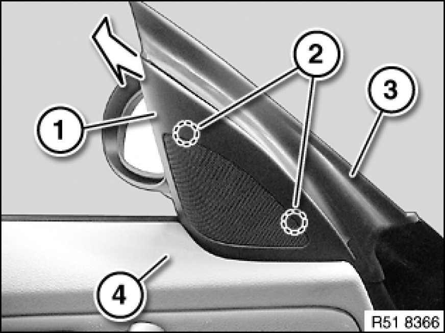
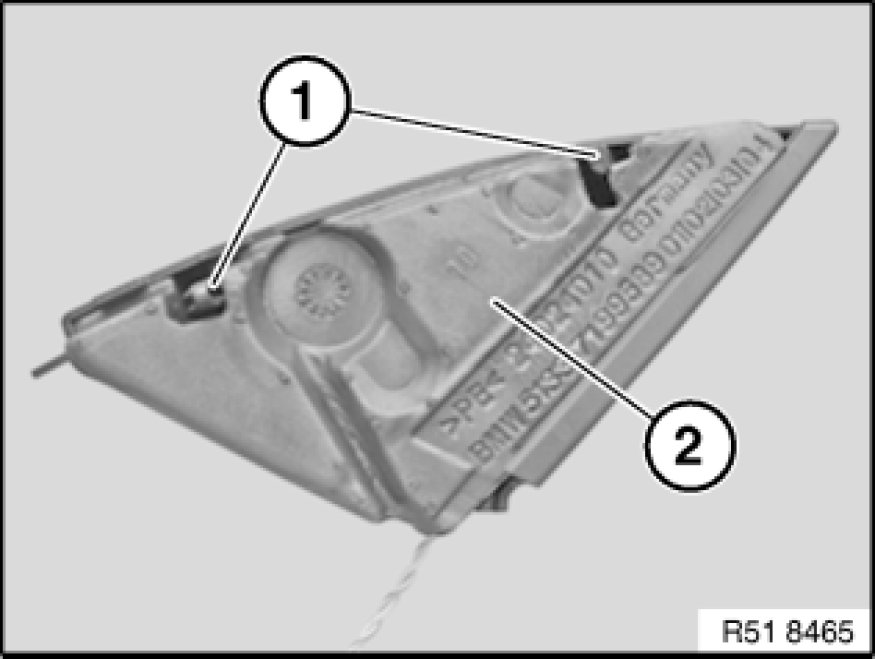

Removing and Installing/Replacing Inside Corner Trim on Front Door
51 16 ... - Removing and installing/replacing inside corner trim on front door

Necessary preliminary tasks:
Version with speaker:
- Remove door trim panel Removing and Installing (Replacing) Front Left or Right Door Trim Panel

Push corner trim (1) slightly upward and release in inward direction from retainers (2).
Remove corner trim (1) from seal (3) and door trim panel (4).
If necessary, disconnect plug connection and remove corner trim (1).
Installation:
If necessary, moisten seal (3) with water in order to fit corner trim (1).
Ensure the corner trim (1) is seated correctly on seal (3) and door trim panel (4).

Installation:
Catches (1) and sound insulation (2) of corner trim must not be damaged.

Replacement:
- Modify speaker